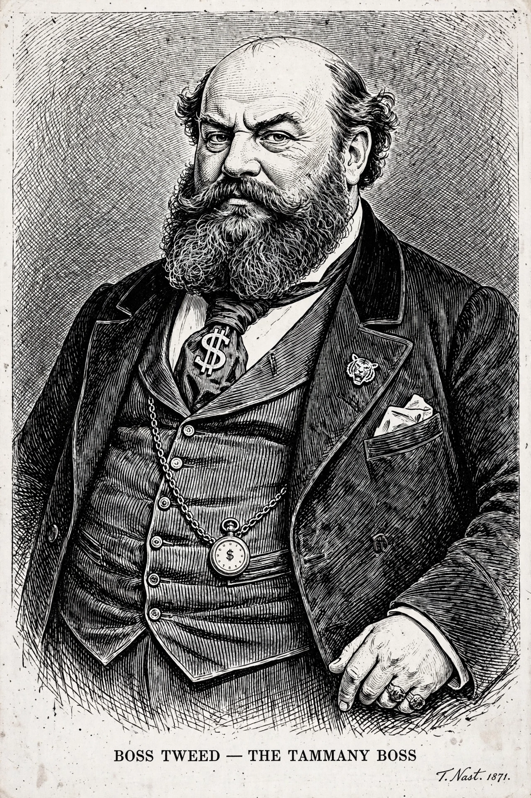

| William Magear Tweed | |
|---|---|
| Born | April 3, 1823, New York City, U.S. |
| Died | April 12, 1878 (aged 55), Ludlow Street Jail, New York City |
| Known for | "Boss" of Tammany Hall; the Tweed Ring |
| Offices | U.S. Representative (1853–1855); New York State Senator; Grand Sachem of Tammany Hall |
| Party | Democratic |

William Magear Tweed (April 3, 1823 – April 12, 1878), often called "Boss Tweed", was an American politician most notable for being the political boss of Tammany Hall, the Democratic Party political machine that played a central role in the politics of nineteenth-century New York City and State. At the height of his influence, Tweed and his associates — the "Tweed Ring", including Mayor A. Oakey Hall, Comptroller Richard Connolly, and Chamberlain Peter Sweeny — systematically plundered the city's treasury on a scale that made him one of the most notorious corrupt politicians in American history.
Tweed was born on the Lower East Side of Manhattan to a Scottish-American chairmaker. He worked as a bookkeeper and brush maker, joined a volunteer fire company — the traditional ladder into New York politics — and was elected to the U.S. House of Representatives in 1852, serving one undistinguished term. His real power base was local: he became Grand Sachem of the Tammany Society in 1863 and, through a seat on the county Board of Supervisors and later the state senate, positioned the Ring astride the city's finances. A new city charter in 1870 consolidated control of spending in a Board of Audit composed of Tweed's allies.
The Ring's method was simple and relentless: contractors on city work were required to pad their bills by a fixed percentage — eventually as much as 65 percent — with the excess divided among the conspirators. The emblematic project was the New York County Courthouse on Chambers Street, authorized at $250,000 but ultimately costing the city more than $11 million; individual invoices included thousands of dollars for thermometers and millions for plastering and furniture. Estimates of the total stolen range from $25 million to $200 million in nineteenth-century dollars. Tweed dispensed patronage, naturalization assistance, and charity to immigrant voters, and his machine delivered the votes that kept it in office.
The Ring was undone by exposure. Beginning in 1871, The New York Times published detailed accounts from a disgruntled former bookkeeper's records, while cartoonist Thomas Nast in Harper's Weekly fixed Tweed's image in the public mind as a bloated thief with a money bag for a head — cartoons Tweed reportedly feared more than editorials because, as he put it, his constituents could not read but could see pictures. A reform movement, the Committee of Seventy, organized prosecutions led by Samuel J. Tilden. Tweed was convicted in 1873 of larceny and forgery, but escaped from custody in 1875 and fled to Cuba and then Spain, where he was arrested — reportedly recognized from one of Nast's cartoons — working as a common seaman. Extradited to New York, he died in the Ludlow Street Jail on April 12, 1878.
"Boss Tweed" and "Tweed Ring" remain standard American shorthand for urban political corruption, and the unfinished courthouse — still called the Tweed Courthouse — survives behind City Hall as a monument to the era. Historians note, however, that Tweed's machine also modernized the city, building roads, sewers, schools, and the foundations of the Metropolitan Museum of Art and Central Park, albeit at grotesquely inflated prices.